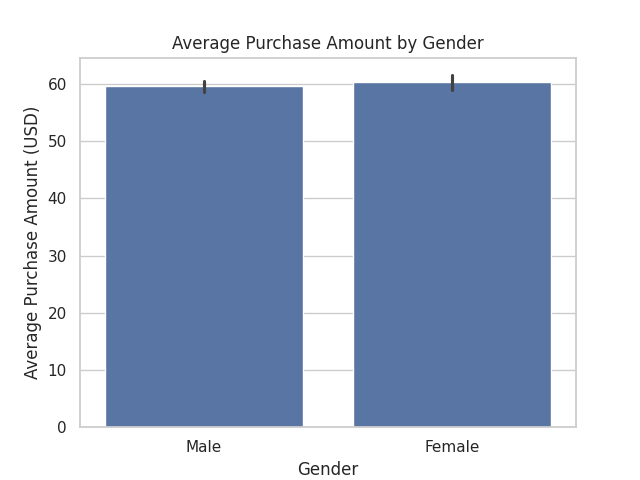
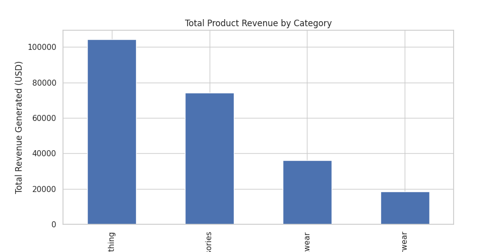
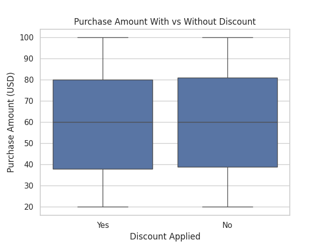
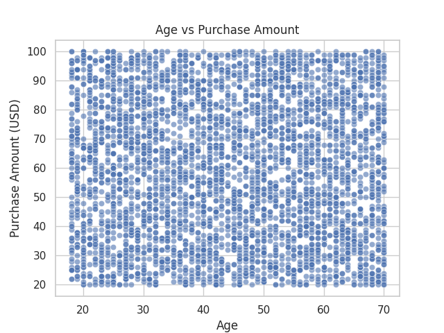

Project Overview
This project explores customer shopping behavior using exploratory data analysis (EDA) to understand spending patterns, revenue-driving categories, and the role of discounts.
Dataset: Kaggle – Customer Shopping Trends
Tools: Python, Pandas, Matplotlib, Seaborn
Spending by Gender
This analysis compares average purchase amounts across genders to identify differences in spending behavior.
Key Insight
This visualization shows the mean purchase amount grouped by gender, allowing for a comparison of central tendency across demographic segments.
- Observation: The average purchase amounts for male and female customers are nearly identical, with only a marginal difference between the two groups. The overlap suggests low effect size, indicating that gender does not meaningfully explain variance in purchase amount.
- Interpretation: Because the central tendency is similar across genders, gender alone appears to have limited predictive power for purchase value in this dataset. Any observed difference is likely outweighed by other factors such as product category, purchasing context, or discount application.
- Implication for modeling / decision-making: Gender may be better utilized as a secondary or interaction feature rather than a primary driver in predictive models or segmentation strategies. Feature combinations involving behavioral variables are likely to yield stronger explanatory and predictive performance.
Revenue by Product Category
A small number of product categories contribute disproportionately to total revenue, highlighting key focus areas for business strategy.
Key Insight
This visualization shows the total revenue aggregated by product category, highlighting how revenue contribution varies across categories.
- Observation: Revenue distribution across categories is highly skewed, with a small subset of categories accounting for a disproportionately large share of total revenue. The leading category generates significantly more revenue than the remaining categories, indicating an uneven contribution pattern.
- Interpretation: The skewed distribution suggests a Pareto-like effect, where a minority of product categories drive the majority of revenue. Lower-revenue categories contribute marginally in comparison, which may reflect differences in demand, pricing, purchase frequency, or product availability..
- Implication for modeling / decision-making: Product category emerges as a high-impact explanatory feature and should be prioritized in downstream modeling and segmentation efforts. From a business perspective, optimizing inventory, pricing, and promotions for top-performing categories is likely to yield a higher return on investment than uniformly distributing resources across all categories.
Discount Impact on Spending
Box plots are used to compare purchase amounts when discounts are applied versus not applied.
Key Insight
This box plot compares the distribution of purchase amounts for transactions where a discount was applied versus those without a discount, using median, interquartile range (IQR), and overall spread.
- Observation: The median purchase amount is approximately the same for discounted and non-discounted transactions. Both groups exhibit similar interquartile ranges and overall dispersion, with comparable minimum and maximum values.
- Interpretation: The substantial overlap in distributions suggests that applying a discount does not materially increase purchase amount on a per transaction basis. While discounts may influence purchase likelihood or conversion rates, their effect on spending magnitude appears limited in this dataset.
- Implication for modeling / decision-making: Discount application alone may have low marginal explanatory power for predicting purchase amount. In predictive models, discount status should likely be combined with other contextual features such as product category, customer segment, or purchase frequency to capture meaningful interactions. From a business perspective, this supports the use of targeted, behavior - aware discount strategies rather than uniform discounting.
Age vs Purchase Amount
The scatter plot shows no strong correlation between age and purchase amount, suggesting age alone is not a strong predictor of spending.
Key Insight
This scatter plot visualizes the relationship between customer age and purchase amount, allowing assessment of correlation, spread, and potential age-driven spending patterns.
- Observation: Purchase amounts are widely distributed across all age groups, with no visible upward or downward trend. High and low purchase values appear at nearly every age, indicating substantial overlap across the age range.
- Interpretation: The absence of a discernible trend suggests little to no linear correlation between age and purchase amount. Age, as an isolated demographic variable, does not explain meaningful variance in spending behavior within this dataset.
- Implication for modeling / decision-making: Age is likely to have low standalone predictive value in regression or classification models targeting purchase amount. It may be more effective as part of interaction terms or nonlinear transformations when combined with behavioral features such as product category, purchase frequency, or discount usage. From a business standpoint, this supports shifting focus from age-based segmentation toward behavior-driven personalization strategies.
Key Insights & Takeaways
- Age alone is not a strong predictor of purchase amount.
- A few categories drive most of the revenue.
- Discounts influence purchases but do not always increase spend.